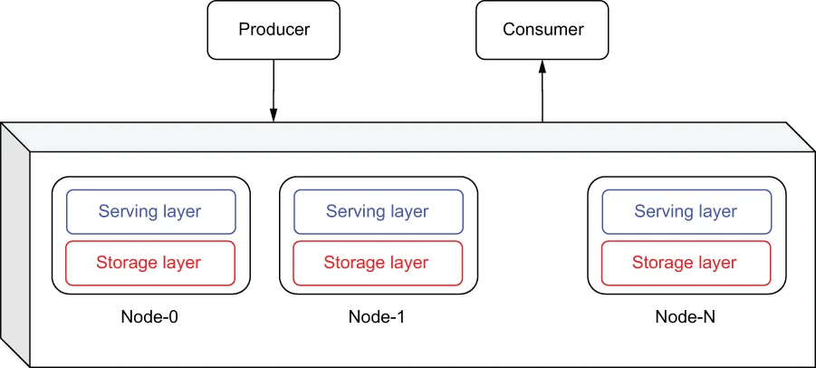
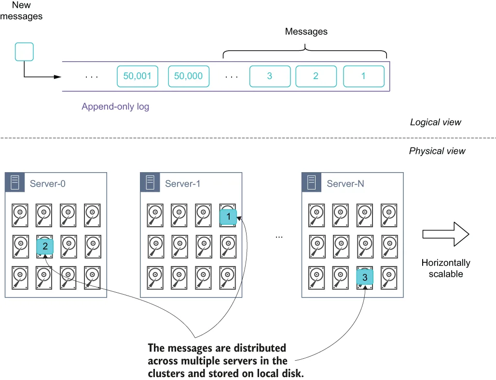
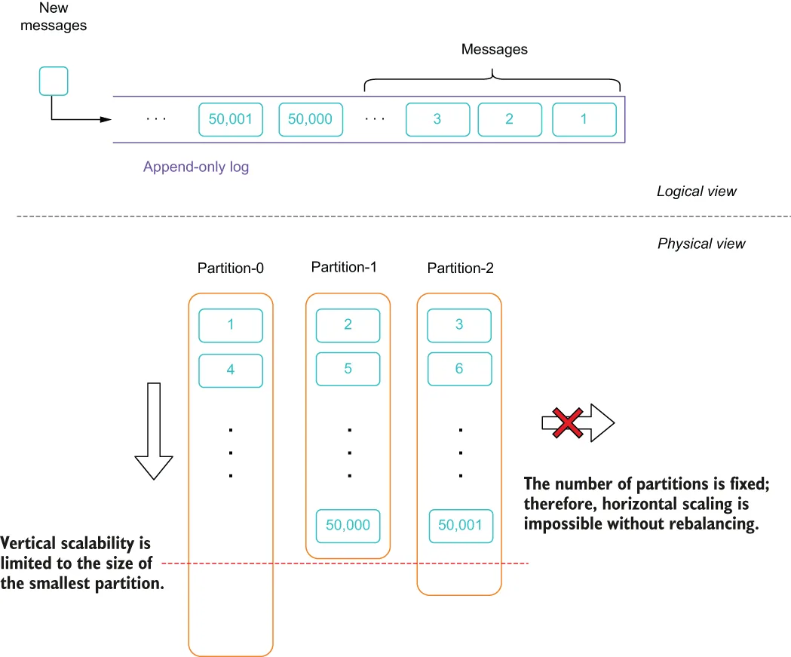
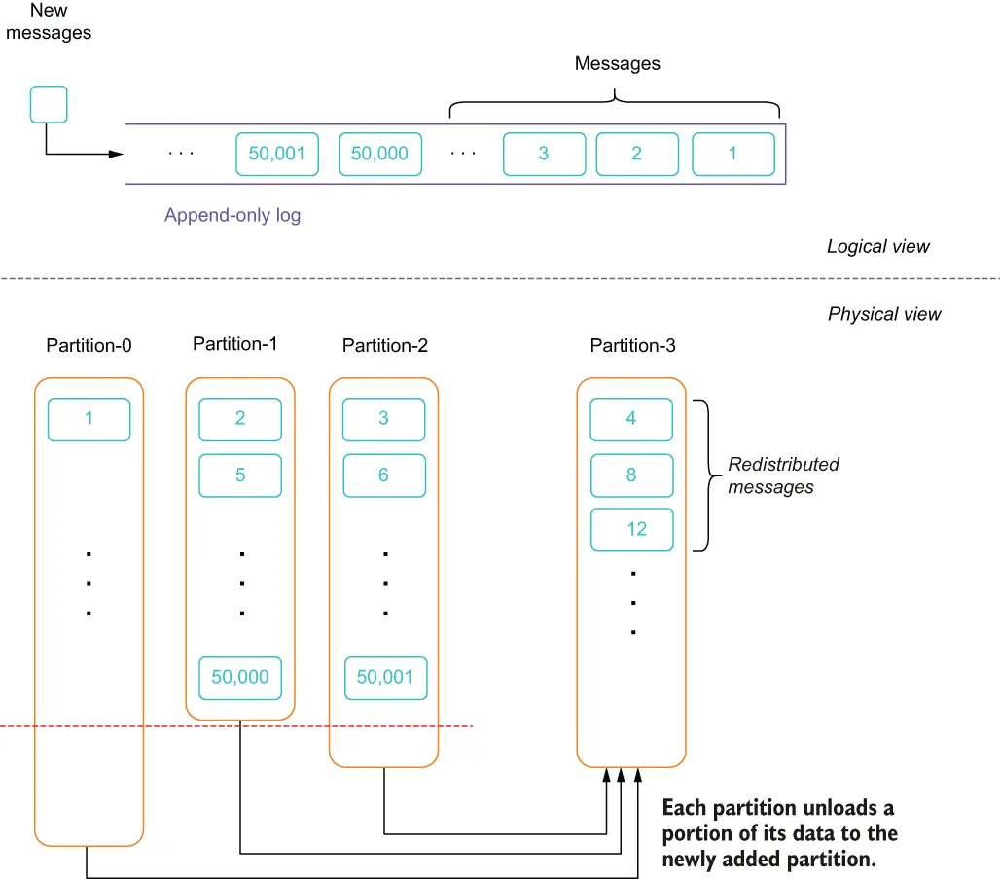
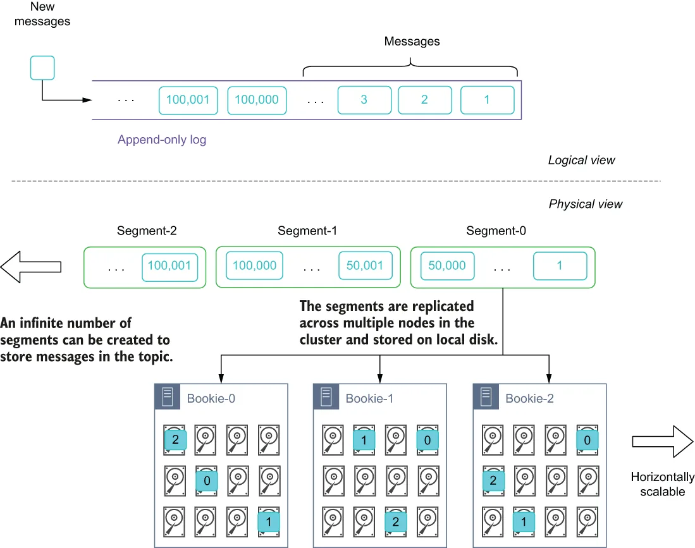

A distributed system can be described as a collection of computers working together to provide a service or feature, such as a filesystem, key-value store, or database, that acts as though they are running on a single computer to the end user. That is to say, the end user isn’t aware of the fact that the service is being provided by a collection of machines working together. Distributed systems have a shared state, operate concurrently, and are able to tolerate hardware failures without affecting the availability of the system as whole.
分布式系统可以被描述为一组协同工作的计算机，它们共同提供某种服务或功能（例如文件系统、键值存储或数据库），而对终端用户来说，这一切表现得就像是运行在单台计算机上一样。也就是说，终端用户并不会察觉到该服务实际上是由一组机器协同提供的。分布式系统具有共享状态，并发运行，并且能够容忍硬件故障而不影响系统整体的可用性。
When the distributed computing paradigm started becoming widely adopted, as popularized by the Hadoop computing framework, the single-machine constraint was lifted. This ushered in an era where new systems were developed that distributed the processing and storage across multiple machines. One of the biggest benefits of distributed computing is the ability to scale the system horizontally, simply by adding new machines to the system. Unlike their non-distributed predecessors that were constrained to the physical hardware capacity of a single machine, these newly developed systems could now leverage the resources from hundreds of machines easily and cost effectively.
当分布式计算范式（因 Hadoop 计算框架而广为人知）开始被广泛采用时，单机约束被打破了。这开启了一个新时代：新开发的系统把处理与存储分散到多台机器上。分布式计算最大的好处之一就是系统能够水平扩展——只需向系统中添加新机器即可。与那些受限于单机物理硬件容量的非分布式前辈不同，这些新开发的系统如今可以轻松且经济地利用数百台机器的资源。
As you can see in figure 1.11, messaging systems, just like databases and computation frameworks, have also made the transition to the distributed computing paradigm as well. Newer messaging systems, with Apache Kafka being the first and, more recently, Apache Pulsar, have adopted the distributed computing model in order to provide the scalability and performance required by modern enterprises.
如图 1.11 所示，消息系统与数据库、计算框架一样，也完成了向分布式计算范式的转变。较新的消息系统——最早是 Apache Kafka，较近的是 Apache Pulsar——都采用了分布式计算模型，以提供现代企业所需的可扩展性与性能。

\Figure 1.11 Within a distributed messaging system, several nodes act together to behave as a single logic system from the perspective of the end user. Internally, the data storage and message processing are distributed across all the nodes.
图 1.11 在分布式消息系统中，多个节点协同工作，从终端用户的视角看就像一个单一的逻辑系统。而在内部，数据存储与消息处理被分散到所有节点上。
Within a distributed messaging system, the contents of a single topic are distributed across multiple machines in order to provide horizontally scalable storage at the message layer, which is something that was not possible with previous messaging systems. Distributing the data across several nodes in the cluster also provides several advantages, including redundancy and high availability of the data, increased storage capacity for messages, increased message throughput due to the increased number of message brokers, and the elimination of a single point of failure within the system.
在分布式消息系统中，单个主题的内容被分散到多台机器上，从而在消息层提供可水平扩展的存储能力，这在以往的消息系统中是无法做到的。把数据分散到集群中的多个节点上还带来若干优势，包括数据的冗余与高可用、消息存储容量的提升、因 broker 数量增加而提高的消息吞吐量，以及消除系统内的单点故障。
The key architectural difference between a distributed messaging system and a clustered single-node system is the way in which the storage layer is designed. In the previous single-node systems, the message data for any given topic was all stored together on the same machine, which allowed the data to be served quickly from a local disk. However, as we mentioned earlier, this limited the size of the topic to the capacity of the local disk on that machine. Within a distributed messaging system, the data is distributed across several machines within the cluster. This distribution of data across multiple machines allowed us to retain messages within an individual topic that exceeded the storage capacity of an individual machine. The key architectural abstraction that makes this distribution of data possible is the write-ahead log, which treats the contents of a message queue as a single append-only data structure that messages can be stored in.
分布式消息系统与集群化单节点系统之间的关键架构差异，在于存储层的设计方式。在以往的单节点系统中，任一给定主题的消息数据都全部存放在同一台机器上，这使得数据可以从本地磁盘快速提供。但正如我们前面提到的，这把主题的容量限制在了该机器本地磁盘的容量之内。而在分布式消息系统中，数据被分散存放在集群内的多台机器上。这种跨多台机器的数据分布，使得我们可以在单个主题中保留超过单台机器存储容量的消息。让这种数据分布成为可能的關鍵架构抽象是预写日志（write-ahead log）——它把消息队列的内容视为一个仅支持追加的数据结构，消息就存储在其中。
As you can see in figure 1.12, from a logical perspective, when a new message is published to the topic, it is appended to the end of the log. However, from a physical perspective, the message can be written to any server within the cluster.
如图 1.12 所示，从逻辑视角看，当一条新消息发布到主题时，它被追加到日志的末尾。但从物理视角看，这条消息可以被写入集群中的任意一台服务器。

\Figure 1.12 The key architectural concept underlying distributed messaging systems is the append-only log (aka the write-ahead log). From a logical perspective, the messages within a topic are all stored sequentially, but are stored in a distributed fashion across multiple servers.
图 1.12 分布式消息系统背后的关键架构概念是仅追加日志（又称预写日志）。从逻辑视角看，主题内的消息都是顺序存储的，但它们以分布式的方式存放在多台服务器上。
This provides distributed messaging systems with a far more scalable storage capacity layer than the previous generations of messaging systems. Another benefit of the distributed messaging architecture is the ability of more than one broker to serve the messages for any given topic, which increases the message production and consumption throughput by spreading the load across multiple machines. For example, messages published to the topic shown in figure 1.12 would be handled by three separate servers, each with its own write path to disk. This would result in a higher write rate, since the load is spread across multiple disks rather than just a single disk, as it was in the previous generation of messaging systems. There are two distinct approaches taken when it comes to how the data is distributed across the nodes in the cluster: partition-based and segment-based.
这为分布式消息系统提供了远比前几代消息系统更具可扩展性的存储容量层。分布式消息架构的另一项好处是：可以有多个 broker 为任一给定主题提供消息服务，通过把负载分散到多台机器上来提升消息的生产与消费吞吐量。例如，发布到图 1.12 所示主题的消息会由三台独立的服务器处理，每台都有自己的磁盘写入路径。这会带来更高的写入速率，因为负载被分散到了多个磁盘上，而不像前一代消息系统那样只落在一个磁盘上。在如何把数据分布到集群各节点这一问题上，存在两种截然不同的思路：基于分区的和基于分段的。
Partition-centric storage in Kafka
Kafka 中以分区为中心的存储
When using the partition-based strategy within a messaging system, the topic is divided into a fixed number of groupings known as partitions. Data that is published to the topic is distributed across the partitions, as shown in figure 1.13, with each partition receiving a portion of the messages published to the topic. The total storage capacity of the topic is now equal to the number of partitions in the topic times the size of each partition. Once this limit is reached, no more data can be added to the topic. Simply adding more brokers to the cluster will not alleviate this issue because you will also need to increase the number of partitions in the topic, which must be performed manually. Furthermore, increasing the number of partitions also requires a rebalance to be performed, which, as I will discuss, is an expensive and time-consuming process.
当消息系统采用基于分区的策略时，主题会被划分为固定数量的分组，称为分区。发布到主题的数据被分散到各个分区，如图 1.13 所示，每个分区接收发布到该主题的一部分消息。此时主题的总存储容量等于主题中分区的数量乘以每个分区的大小。一旦达到这个上限，就无法再向主题写入更多数据。仅仅向集群添加更多 broker 并不能缓解这个问题，因为你还必须增加主题中的分区数量，而这必须手动完成。此外，增加分区数量还需要执行一次再均衡（rebalance），正如我将要讨论的，这是一个昂贵且耗时的过程。

\Figure 1.13 Message storage in a partition-based messaging system
图 1.13 基于分区的消息系统中的消息存储
Within a partition-centric storage-based system, the number of partitions is specified when the topic is created, as this allows the system to determine which nodes will be responsible for storing which partition, etc. However, predetermining the number of partitions has a few unintended side effects, including the following:
在以分区为中心的存储系统中，分区数量是在主题创建时指定的，因为这样系统才能确定由哪些节点负责存储哪些分区等等。然而，预先确定分区数量会带来一些意料之外的副作用，包括以下几点：
单个分区只能存放在集群中的单个节点上，因此分区的大小受限于该节点的可用磁盘空间。
由于数据均匀分布在所有分区上，每个分区的大小被限制为该主题中最小分区的大小。举例来说，如果一个主题分布在三个节点上，其可用磁盘分别为 4 TB、2 TB 和 1 TB，那么第三个节点上的分区最多只能增长到 1 TB，这反过来意味着该主题中的所有分区也只能增长到 1 TB。
尽管并非严格要求，但每个分区通常会被复制多份到不同节点上，以确保数据冗余。因此，分区的最大容量进一步被限制为最小副本的大小。
In the event that you run into one of these capacity limitations, your only remedy is to increase the number of partitions in the topic. However, this capacity expansion process requires rebalancing the entire topic, as shown in figure 1.14. During this rebalancing process, the existing topic data is redistributed across all of the topic partitions in order to free up disk space on the existing nodes. Therefore, when you add a fourth partition to an existing topic, each partition should have approximately 25% of the total messages once the rebalancing process has completed.
一旦你遇到上述某种容量限制，唯一的补救办法就是增加主题中的分区数量。然而，这个容量扩展过程需要对整个主题进行再均衡，如图 1.14 所示。在再均衡过程中，现有的主题数据会被重新分布到该主题的所有分区上，以释放现有节点上的磁盘空间。因此，当你向现有主题添加第四个分区时，再均衡过程完成后，每个分区应当各占总消息量的约 25%。

\Figure 1.14 Increasing the storage capacity of a partition-based topic incurs the cost of rebalancing, in which a portion of the data from the existing partitions is copied over to the newly added partition(s) in order to free up disk space on the existing nodes.
图 1.14 提升基于分区的主题的存储容量，需要付出再均衡的代价：把现有分区中的一部分数据拷贝到新添加的分区上，以释放现有节点上的磁盘空间。
This recopying of data is expensive and error prone, as it consumes network bandwidth and disk I/O directly proportional to the size of the topic (e.g., rebalancing a 10 TB topic would result in 10 TB of data being read from disk, transmitted over the network, and written to disk on the target brokers). Only after the rebalancing process has completed can the previously existing data be deleted and the topic resume serving clients. Therefore, it is advisable to choose your partition sizing wisely, as the cost to rebalance cannot be easily dismissed.
这种数据重新拷贝既昂贵又容易出错，因为它消耗的网络带宽和磁盘 I/O 与主题的大小成正比（例如，对一个 10 TB 的主题做再均衡，就意味着有 10 TB 的数据要从磁盘读出、通过网络传输、并写入目标 broker 的磁盘）。只有在再均衡过程完成之后，先前存在的数据才能被删除，主题才能恢复为客户端提供服务。因此，明智地选择分区大小是很有必要的，因为再均衡的代价不容小觑。
In order to provide redundancy and failover for the data, you can configure the partitions to be replicated across multiple nodes. This ensures that there is more than one copy of the data available on disk even in the event of a node failure. The default replica setting is three, which means that the system will retain three copies of each message. While this is a good trade-off in terms of space for redundancy, you need to account for this additional storage requirement when you size your Kafka cluster.
为了给数据提供冗余与故障转移，你可以把分区配置为跨多个节点复制。这确保了即使在某个节点发生故障时，磁盘上仍有多于一份的数据副本可用。默认的副本设置是三，这意味着系统会为每条消息保留三份拷贝。虽然就冗余而言这是空间上的一个不错权衡，但在规划 Kafka 集群容量时，你需要把这部分额外的存储需求考虑进去。
Segment-centric storage in Pulsar
Pulsar 中以分段为中心的存储
Pulsar relies upon the Apache BookKeeper projects to provide the persistent storage of its messages. BookKeeper’s logical storage model is based on the concept of boundless stream entries stored as a sequential log. As you can see in figure 1.15, within BookKeeper each log is broken down into smaller chunks of data, known as segments, which in turn are comprised of multiple log entries. These segments are then written across a number of nodes, known as bookies, in the storage layer for redundancy and scale.
Pulsar 依赖 Apache BookKeeper 项目来提供消息的持久化存储。BookKeeper 的逻辑存储模型基于这样的概念：把无边界的流 entry 存储为顺序日志。如图 1.15 所示，在 BookKeeper 中，每条日志被拆分成更小的数据块，称为分段（segment），而每个分段又由多个日志 entry 组成。这些分段随后被写入存储层中若干被称为 bookie 的节点上，以实现冗余和扩展。

\Figure 1.15 Message storage in a segment-centric messaging system is done by writing a predetermined number of messages into a “segment” and then storing multiple replicas of the segment across different nodes in the storage layer.
图 1.15 以分段为中心的消息系统中，消息存储的方式是：先把预定数量的消息写入一个"分段"，然后把该分段的多个副本存放到存储层的不同节点上。
As you can see from figure 1.15, the segments can be placed anywhere on the storage layer that has sufficient disk capacity. When there isn’t sufficient storage capacity in the storage layer for new segments, new nodes can be easily added and used immediately for storing data. One of the key benefits of segment-centric storage architecture is true horizontal scalability as segments can be created indefinitely and stored anywhere, unlike partition-centric storage which imposes artificial limitations to both vertical and horizontal scaling based on the number of partitions.
从图 1.15 可以看出，分段可以被放置在存储层上任何有足够磁盘容量的地方。当存储层没有足够容量容纳新的分段时，可以轻松添加新节点，并立即投入使用来存储数据。以分段为中心的存储架构的关键优势之一就是真正的水平可扩展性——因为分段可以无限创建并存放在任何地方；而基于分区的存储则会根据分区数量，对垂直扩展和水平扩展都施加人为的限制。